Landscape Architecture · BSc Thesis
Urban Agriculture Learning Center and Community Garden for Food Security in Thawiwatthana, Bangkok
Bachelor’s Degree Thesis
Reconnecting a community
with its agricultural roots.
The proposal transforms abandoned urban land, formerly rice fields and gardens, into an urban agriculture learning center and community garden in Thawiwatthana, Bangkok. It reconnects the community with its agricultural heritage while supporting sustainable local food production.
- Location
- Thawiwatthana, Bangkok, Thailand
- Site area
- 15.68 hectares · 98 rai
- Focus
- Food security, community learning, and urban agriculture
- Design approach
- A productive landscape adapted to local climate, soil, and seasonal water conditions
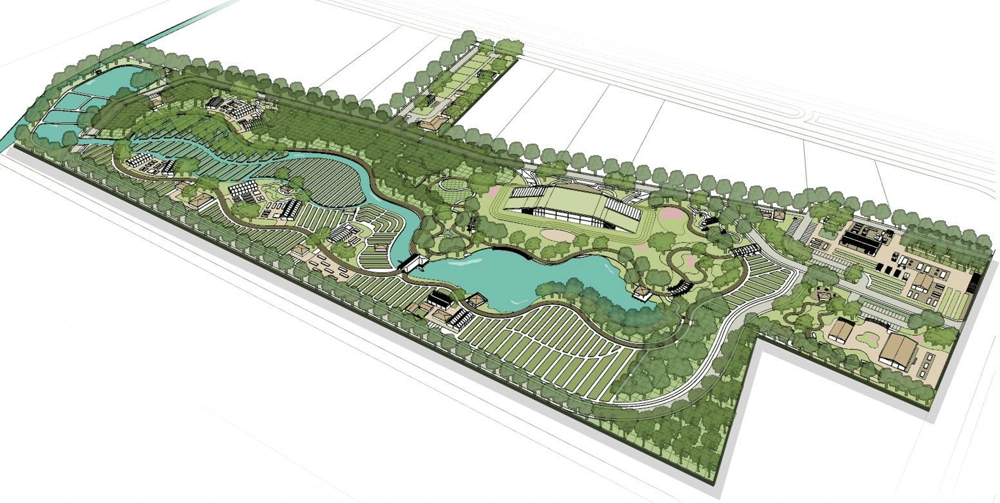
The story of Thawiwatthana
From agricultural land to a city around the farms.
Thawiwatthana’s agricultural landscape grew around canals, mixed orchards, vegetable gardens, and rice fields. As transport routes, industry, and housing expanded, development gradually divided the growing areas. The thesis timeline traces this shift from a connected agricultural landscape to farmland surrounded by the city.
Canals support orchards, gardens, and farming communities.
Transport, industry, and commercial growth reshape the landscape.
Housing expansion fragments agricultural land and changes its surroundings.
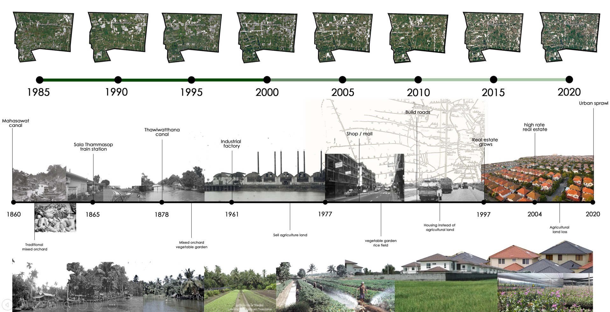
Site & context
Agricultural land within a changing city.
The thesis examines the fragmentation of agricultural land as housing expands into Thawiwatthana. The selected site on Utthayan Road sits within this transition, where roads, canals, residential development, and remaining farmland meet. The proposal uses this setting to reconnect growing food with everyday urban life.
Site selection considered available land, ownership, access by road and public transport, proximity to communities, and compatibility with surrounding development.
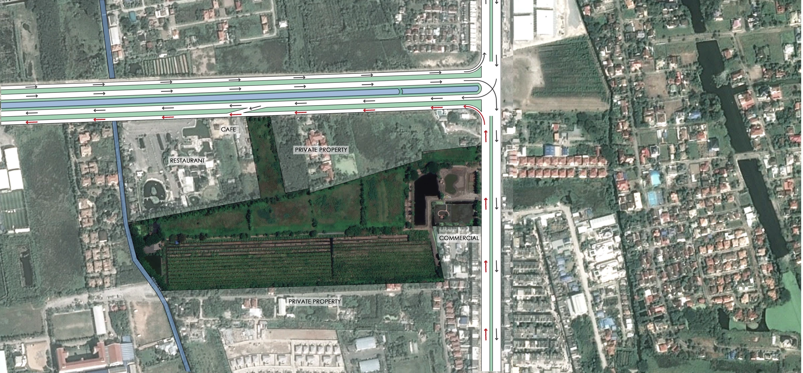
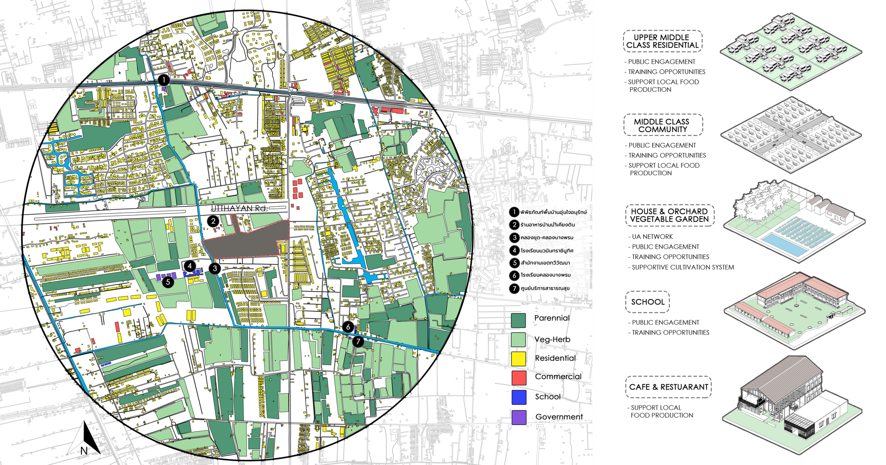
People & programme
Learn, grow, share, and gather.
The programme serves local residents, farmers, people learning to grow food for themselves, consumers, and visitors. Workshops and demonstrations connect to practical growing spaces, while the market, café, children’s garden, and public landscape make agriculture part of a wider community experience.
136,400 m² proposed programme area within the 156,800 m² site.
- Public & recreation17,200 m²
- Markets, gathering spaces, and outdoor recreation.
- Learning center12,500 m²
- Training and exchange of agricultural knowledge.
- Community garden & showcasing20,400 m²
- Shared cultivation and growing demonstrations.
- Community supported agriculture70,600 m²
- Integrated farming, mixed orchards, and agroforestry.
- Productive urban agriculture9,400 m²
- Rental plots and greenhouses for food production.
- Back of house6,300 m²
- Facilities supporting the productive landscape.
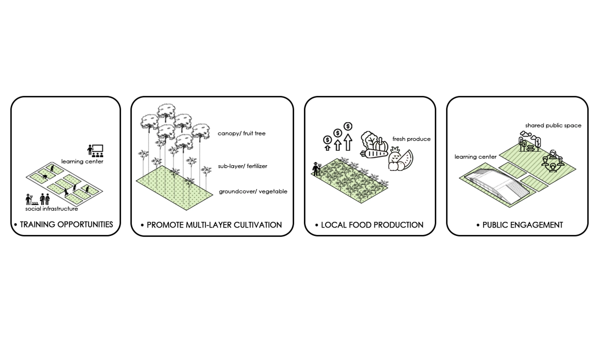
The design
Explore the master plan & project zones
Start with the masterplan, then explore each zone through its isometric plan, walking circulation, and detail board. Click a drawing to open the full image and zoom.
Productive planting
Different ways of growing on one site.
The planting design brings agroforestry, mixed orchards, integrated farming, and rental plots into a connected landscape. These spaces demonstrate different cultivation patterns and give visitors opportunities to learn about food production through the plants and systems around them.

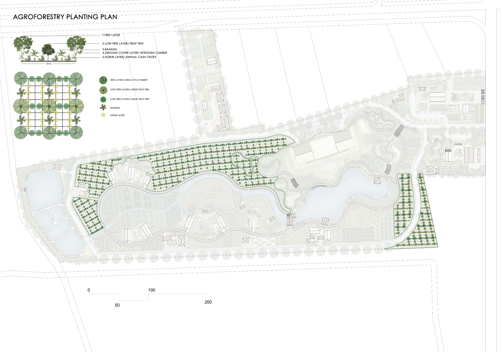
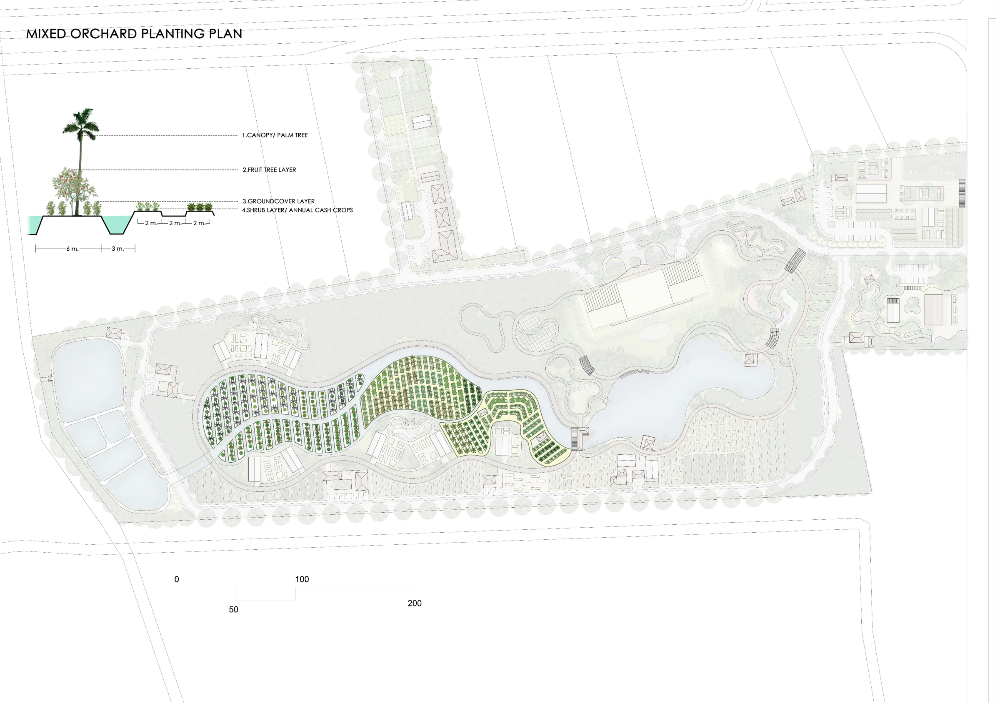
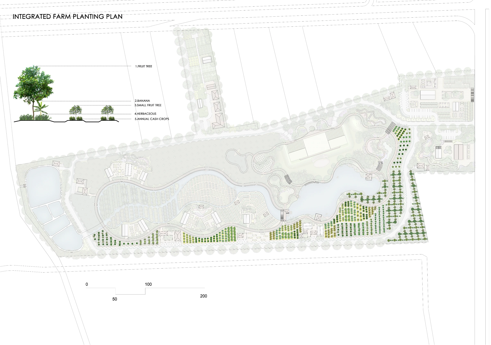
Seasonal water
Water as part of the productive landscape.
The proposal connects a reservoir, sediment ponds, marsh planting, and irrigation infrastructure. Water is stored and distributed through the site to support cultivation during dry periods, while ponds and planted areas are incorporated into the landscape’s response to seasonal rain.
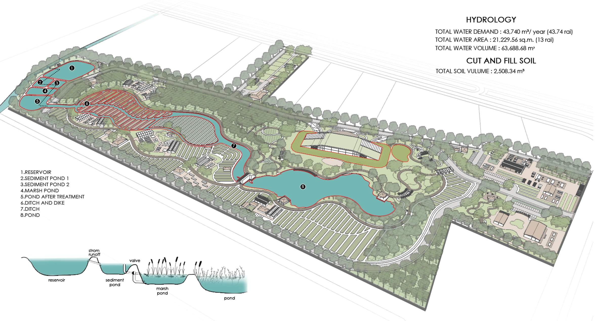
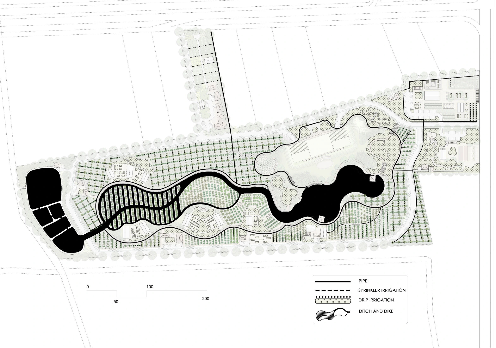
Landscape visualisations
From a plan to a place.
Design visualisations bring the productive gardens, waterfront spaces, and learning environment into view.
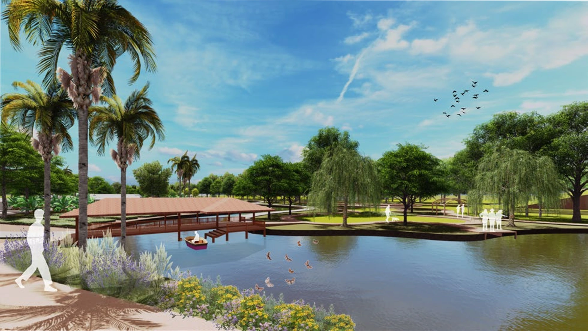
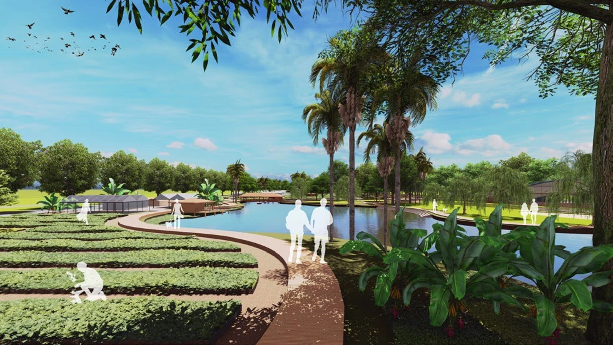
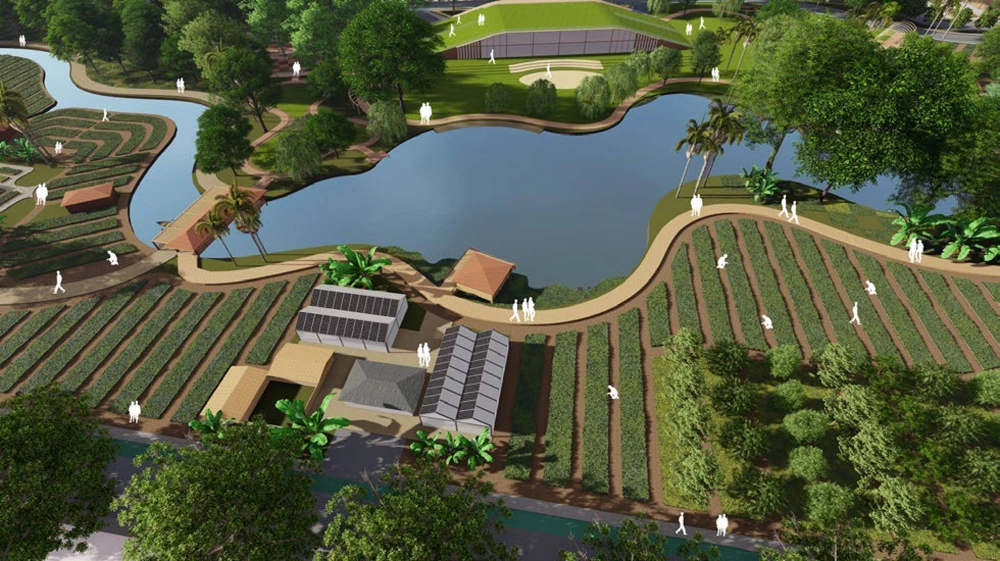
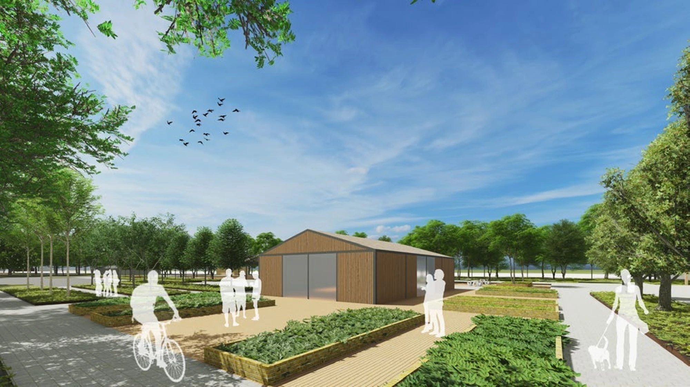
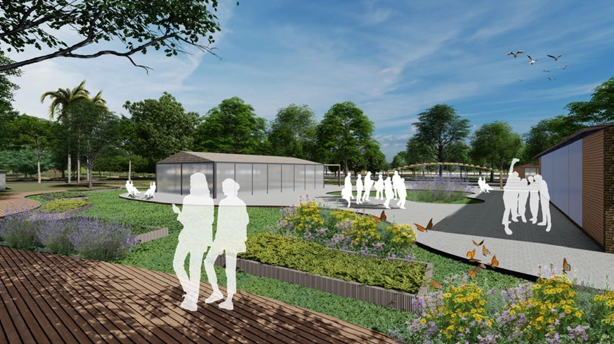
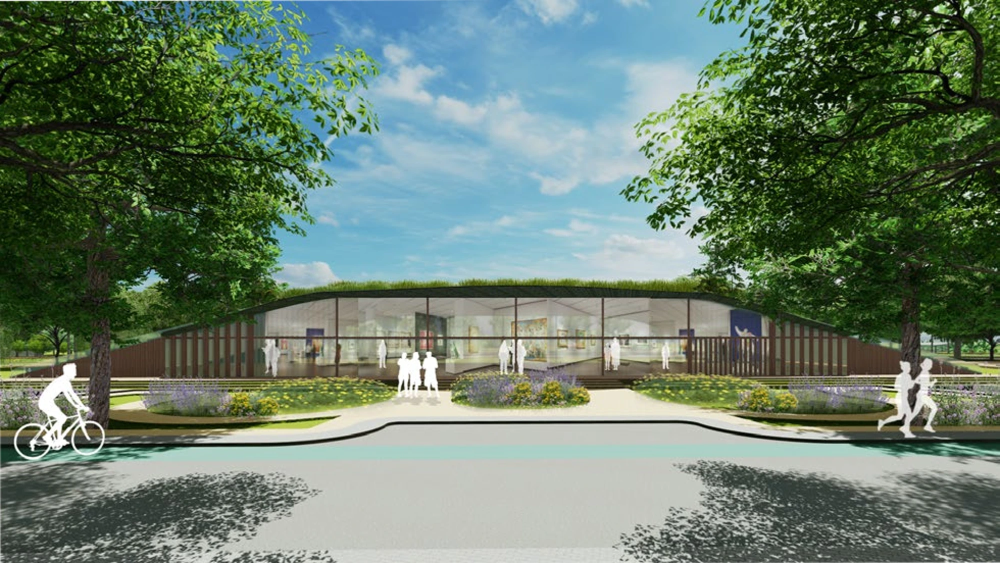